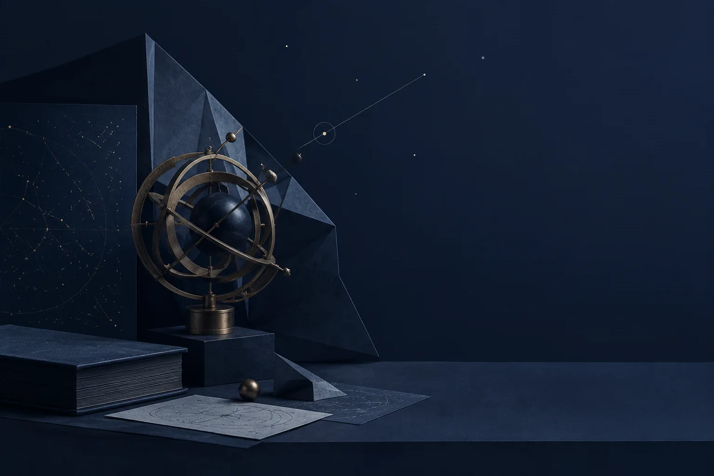

2026 . 09 . 08 · 突发内测
没有发布会，没有预热海报。9 月 8 日下午，DeepSeek 在官方交流群悄悄放出了 V4.1 Flash「中间版本」内测——9 月 10 日自动到期，测试窗口只有两天。
Intermediate beta · expires 0910[03] · 9 月 8 日下午 · 官方交流群
[04] · 开发者实测输出速度
X 上开发者分享的最高实测输出速度。普遍报告超过 300 tokens/s——V4 Flash 本就以速度见长，V4.1 Flash 把这个优势继续往前推。
数字来自开发者自发分享的非正式基准（X / 社群），非官方跑分；仅供体感参考。
[05] · 官方表述
图文输入依赖插件式的 Vision 扩展包——8 月 21 日上线的 V4-Flash-Vision-Exp 就是这条路：能力是「接上去」的，文本、图像各走各的门。
文本、图像、音频输入统一处理，原生多模态。官方同时强调「能力更强、速度更快、成本更低」——架构重构的红利，一次给齐。
[06] · 内测期计费 · 与 V4 Flash 完全一致
计费与 deepseek-v4-flash 逐项对齐，没有测试溢价。换架构不换价签——这在 DeepSeek 的更新史上已经成为惯例。
[07] · 2026 年 4 → 9 月
Pro 1.6T/49B 激活 · Flash 284B/13B · 1M 上下文 · MIT
生产 API 开放，速度型主力就位
生产 API + Harness v0.1 同步开源
V4-Flash-Vision-Exp，外挂式视觉理解
新架构 · 原生多模态 · 两天窗口
窗口关闭，等下一声发令枪
[08] · 一个容易忽略的限制
20 并发，只够验证功能，
不够跑生产。
「V4.1 Flash 能否全面替换线上 V4 Pro？」
—— DeepSeek 随内测发出的匿名问卷原话。一个 Flash 级架构，被公开试探能否吃掉旗舰 Pro 的负载。这大概就是这轮内测真正的意图：用更低的价位，承接更高的野心。
事实边界：速度数字为开发者自发实测，非官方基准；参数规模以官方发布页为准；内测信息截至 2026-09-09 整理。视觉说明：本 deck 为 claude-fable-5-1-theme-workflow skill 的 night mode 演示案例，配图均为原创概念图，非官方素材、不作为证据；版式与 Anthropic 无隶属关系。